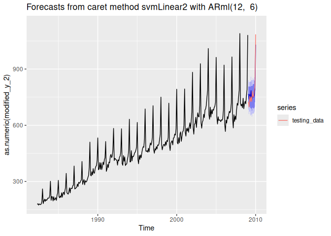
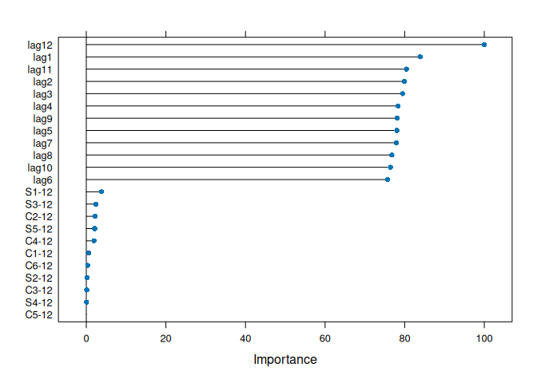
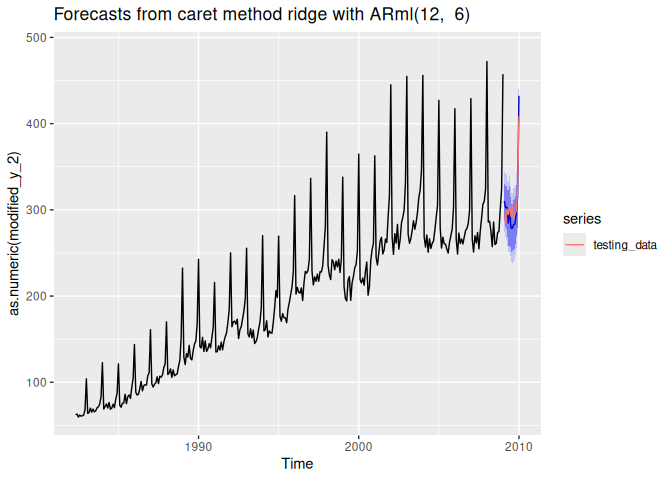
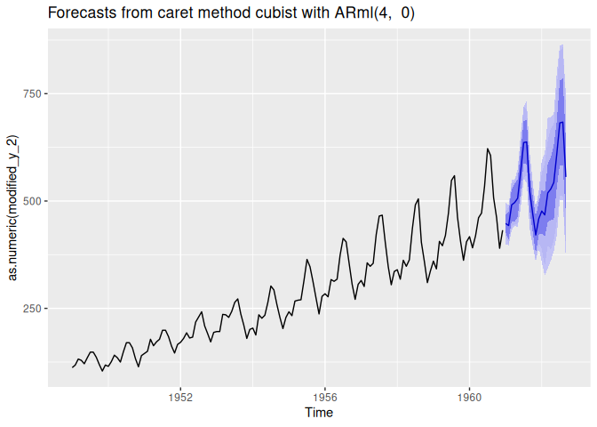
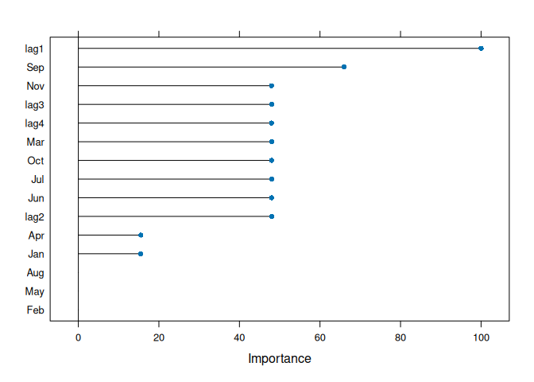

caretForecast aspires to equip users with the means of using machine learning algorithms for time series data forecasting.
Features
- Use any regression model from the caret package for time series forecasting
- Automatic feature engineering with lagged values and Fourier terms for seasonality
- Horizon-specific conformal prediction intervals with proper out-of-sample calibration
- Support for external regressors (promotions, holidays, etc.)
- Compatible with hierarchical/grouped time series via the hts package
Installation
The CRAN version with:
install.packages("caretForecast")The development version from GitHub with:
# install.packages("devtools")
devtools::install_github("taf-society/caretForecast")Example
By using caretForecast, users can train any regression model that is compatible with the caret package. This allows them to use any machine learning model they need in order to solve specific problems, as shown by the examples below.
Load the library
library(caretForecast)
#> Registered S3 method overwritten by 'quantmod':
#> method from
#> as.zoo.data.frame zoo
data(retail_wide, package = "caretForecast")Forecasting with glmboost
i <- 8
dtlist <- caretForecast::split_ts(retail_wide[,i], test_size = 12)
training_data <- dtlist$train
testing_data <- dtlist$test
fit <- ARml(training_data, max_lag = 12, caret_method = "cubist",
verbose = FALSE)
#> initial_window = NULL. Setting initial_window = 301
#> Loading required package: ggplot2
#> Loading required package: lattice
forecast(fit, h = length(testing_data), level = c(80,95))-> fc
accuracy(fc, testing_data)
#> ME RMSE MAE MPE MAPE MASE
#> Training set 0.3616104 8.550244 6.349603 -0.0727533 3.243307 0.4120175
#> Test set 2.4886342 15.770333 11.247363 1.1450840 3.448918 0.7298268
#> ACF1 Theil's U
#> Training set 0.2754280 NA
#> Test set 0.3447055 0.5827831
autoplot(fc) +
autolayer(testing_data, series = "testing_data")
Forecasting with cubist regression
i <- 9
dtlist <- caretForecast::split_ts(retail_wide[,i], test_size = 12)
training_data <- dtlist$train
testing_data <- dtlist$test
fit <- ARml(training_data, max_lag = 12, caret_method = "cubist",
verbose = FALSE)
#> initial_window = NULL. Setting initial_window = 301
forecast(fit, h = length(testing_data), level = c(80,95), PI = TRUE)-> fc
accuracy(fc, testing_data)
#> ME RMSE MAE MPE MAPE MASE
#> Training set 0.5498926 13.33516 10.36501 0.0394589 2.223005 0.3454108
#> Test set -17.9231242 47.13871 32.03537 -2.6737257 4.271373 1.0675691
#> ACF1 Theil's U
#> Training set 0.3979153 NA
#> Test set 0.4934659 0.4736043
autoplot(fc) +
autolayer(testing_data, series = "testing_data")
Forecasting using Support Vector Machines with Linear Kernel
i <- 9
dtlist <- caretForecast::split_ts(retail_wide[,i], test_size = 12)
training_data <- dtlist$train
testing_data <- dtlist$test
fit <- ARml(training_data, max_lag = 12, caret_method = "svmLinear2",
verbose = FALSE, pre_process = c("scale", "center"))
#> initial_window = NULL. Setting initial_window = 301
forecast(fit, h = length(testing_data), level = c(80,95), PI = TRUE)-> fc
accuracy(fc, testing_data)
#> ME RMSE MAE MPE MAPE MASE
#> Training set -0.2227708 22.66741 17.16009 -0.2476916 3.712496 0.5718548
#> Test set -1.4732653 28.47932 22.92438 -0.4787467 2.883937 0.7639481
#> ACF1 Theil's U
#> Training set 0.3290937 NA
#> Test set 0.3863955 0.3137822
autoplot(fc) +
autolayer(testing_data, series = "testing_data")
get_var_imp(fc)
get_var_imp(fc, plot = F)
#> loess r-squared variable importance
#>
#> only 20 most important variables shown (out of 23)
#>
#> Overall
#> lag12 100.0000
#> lag1 83.9153
#> lag11 80.4644
#> lag2 79.9170
#> lag3 79.5019
#> lag4 78.3472
#> lag9 78.1634
#> lag5 78.0262
#> lag7 77.9153
#> lag8 76.7721
#> lag10 76.4275
#> lag6 75.7056
#> S1-12 3.8169
#> S3-12 2.4230
#> C2-12 2.1863
#> S5-12 2.1154
#> C4-12 1.9426
#> C1-12 0.5974
#> C6-12 0.3883
#> S2-12 0.2220Forecasting using Ridge Regression
i <- 8
dtlist <- caretForecast::split_ts(retail_wide[,i], test_size = 12)
training_data <- dtlist$train
testing_data <- dtlist$test
fit <- ARml(training_data, max_lag = 12, caret_method = "ridge",
verbose = FALSE)
#> initial_window = NULL. Setting initial_window = 301
forecast(fit, h = length(testing_data), level = c(80,95), PI = TRUE)-> fc
accuracy(fc, testing_data)
#> ME RMSE MAE MPE MAPE MASE
#> Training set 7.11464e-14 12.69082 9.53269 -0.1991292 5.212444 0.6185639
#> Test set 1.52445e+00 14.45469 12.04357 0.6431543 3.880894 0.7814914
#> ACF1 Theil's U
#> Training set 0.2598784 NA
#> Test set 0.3463574 0.5056792
autoplot(fc) +
autolayer(testing_data, series = "testing_data")
get_var_imp(fc)
get_var_imp(fc, plot = F)
#> loess r-squared variable importance
#>
#> only 20 most important variables shown (out of 23)
#>
#> Overall
#> lag12 100.0000
#> lag1 84.2313
#> lag2 78.9566
#> lag11 78.5354
#> lag3 76.3480
#> lag10 74.4727
#> lag4 74.1330
#> lag7 74.0737
#> lag9 73.9113
#> lag5 73.2040
#> lag8 72.7224
#> lag6 71.5713
#> S1-12 6.3658
#> S3-12 2.7341
#> C2-12 2.7125
#> S5-12 2.4858
#> C4-12 2.2137
#> C6-12 0.6381
#> C1-12 0.5176
#> S2-12 0.4464Adding external variables
The xreg argument can be used for adding promotions, holidays, and other external variables to the model. In the example below, we will add seasonal dummies to the model. We set the ‘seasonal = FALSE’ to avoid adding the Fourier series to the model together with seasonal dummies.
xreg_train <- forecast::seasonaldummy(AirPassengers)
newxreg <- forecast::seasonaldummy(AirPassengers, h = 21)
fit <- ARml(AirPassengers, max_lag = 4, caret_method = "cubist",
seasonal = FALSE, xreg = xreg_train, verbose = FALSE)
#> initial_window = NULL. Setting initial_window = 132
fc <- forecast(fit, h = 12, level = c(80, 95, 99), xreg = newxreg)
autoplot(fc)
get_var_imp(fc)
Conformal Prediction Intervals
As of version 0.1.2, caretForecast implements horizon-specific conformal prediction intervals. This approach provides properly calibrated prediction intervals that naturally widen with forecast horizon (trumpet shape), addressing a common limitation of ML-based forecasting methods.
How it works
When calibrate = TRUE (the default), ARml() performs rolling-origin calibration using out-of-sample forecasts to compute nonconformity scores for each forecast horizon. This ensures that the prediction intervals have the correct coverage probability.
Key parameters
-
calibrate: Logical. If TRUE (default), performs horizon-specific calibration for conformal prediction intervals -
calibration_horizon: Maximum forecast horizon for calibration. Defaults to2 * frequency(y)for seasonal data or 10 for non-seasonal data -
n_cal_windows: Number of rolling windows for calibration. Automatically determined based on data length (max 50)
Example with calibrated intervals
# Fit model with conformal calibration (default)
fit <- ARml(AirPassengers, max_lag = 12, caret_method = "ridge",
verbose = FALSE, calibrate = TRUE)
#> initial_window = NULL. Setting initial_window = 124
# Forecast with prediction intervals
fc <- forecast(fit, h = 24, level = c(80, 95))
# The intervals widen appropriately with forecast horizon
autoplot(fc)